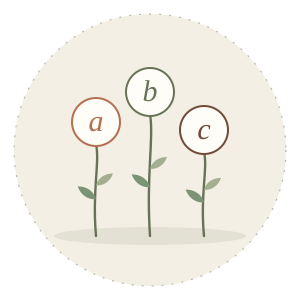

Taller 01
Taller de Alfabetización
Un espacio de aprendizaje para acompañar el desarrollo de la lectura y la escritura, respetando los tiempos y las necesidades de cada participante.
Trabajamos
- Reconocimiento de letras y sonidos
- Relación entre sonidos y grafías
- Lectura y escritura
- Comprensión lectora
- Producción y expresión escrita
Dirigido a: Niños y niñas que necesitan acompañamiento en sus procesos de alfabetización.
Consultar por este taller